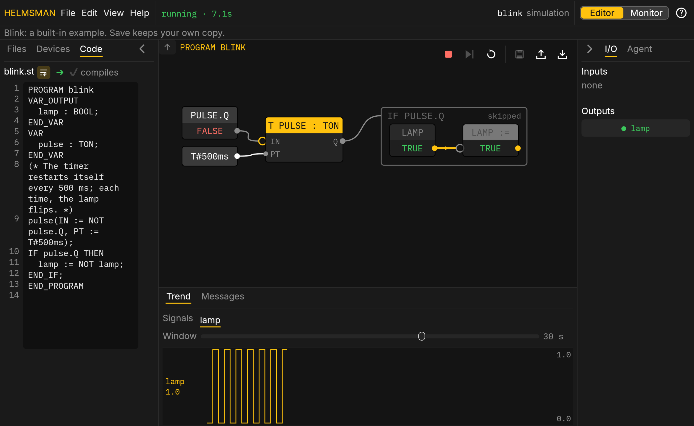

What engineers are tired of
A virtual machine per version
Nothing to install
Served by the controller

What engineers are tired of
Licence keys, dongles and trial timers
No keys.
No dongles.
The controller has none of them
Apache 2.0
What engineers are tired of
Project files you can't compare
Plain text you
can compare
latch.st
PROGRAM latch
- motor := start AND NOT stop;
+ motor := (start OR motor) AND NOT stop;
END_PROGRAM
Write specs,
not
code
The soft PLC you program by describing the machine
1. Describe
2.
Validate
The agent writes standard Structured Text
Press start: the motor latches on
Press stop: it drops. The trend shows every signal
3. Approve
An engineer signs off with a PIN
Every version is kept

Helmsman
Factory automation
Try it in your browser
helmsman.advin.io
Early releaseOpen source (Apache 2.0)